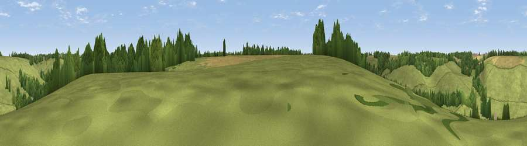

Viewpoint near Lydden
#44305 in England · top 89% of its area beats it · near LyddenWhere it is
The exact computed spot (TR 26125 45125). Click the marker for map links.
The view, rendered

A 360° render of this exact spot computed from the terrain model, tree cover and land cover — summer colours, afternoon light, calibrated against photographs of famous viewpoints. Real trees, hedges and buildings will differ in detail.
The panorama
Grey silhouette: terrain skyline in each direction (720 bearings, Earth curvature and refraction included). Dashed green: skyline with trees (+15 m) and buildings (+8 m) as obstacles. Blue strip: how far the ground is visible on each bearing.
Where the view opens
Wedge length = distance to the farthest visible ground on that bearing (vegetation-aware). Rings at 10, 25 and 50 km.
What fills the view
73% grassland · 17% woodland · 10% cropland ·
Angular shares of the visible panorama (visual magnitude), not map area. Landscape diversity 0.34 (0–1 Shannon).
Key numbers
More beautiful places nearby
The staircase of upgrades: each row has a higher view potential than everything closer. Driving times are estimates from straight-line distance, calibrated against real road routing — check an actual route before setting out.
| Place | Direction | Drive | Score |
|---|---|---|---|
| Viewpoint near Lydden | N · 1 km | ~3 min | 27.6 |
| Viewpoint near Temple Ewell | E · 2 km | ~5 min | 33.6 |
| Viewpoint near River | SE · 4 km | ~9 min | 42.4 |
| Viewpoint near Capel-le-Ferne | S · 7 km | ~14 min | 76.6 |
| Viewpoint near Capel-le-Ferne | SSE · 7 km | ~14 min | 77.1 |
| Viewpoint near Capel-le-Ferne | SSE · 7 km | ~14 min | 77.9 |
| Viewpoint near Capel-le-Ferne | SSW · 8 km | ~16 min | 80.2 |
| Viewpoint near Willingdon | WSW · 81 km | ~105 min | 83.4 |
51.16066, 1.23262 · source: screening · position refined by local search. Computed location — check access rights before visiting.